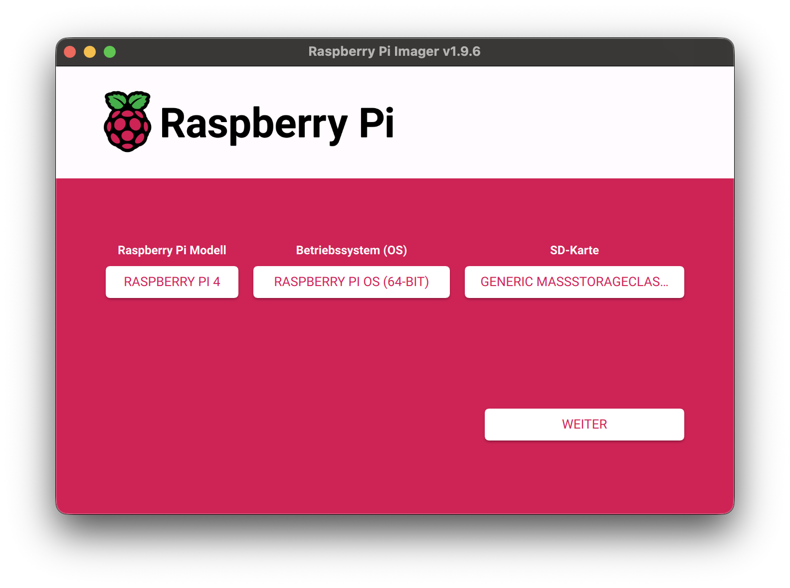
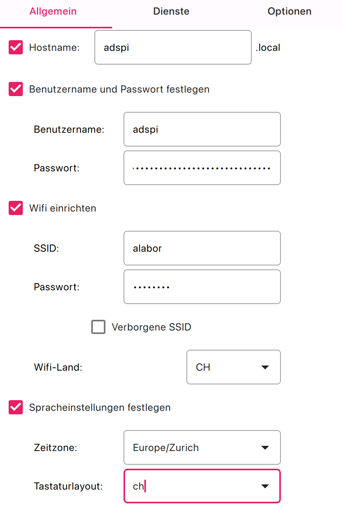
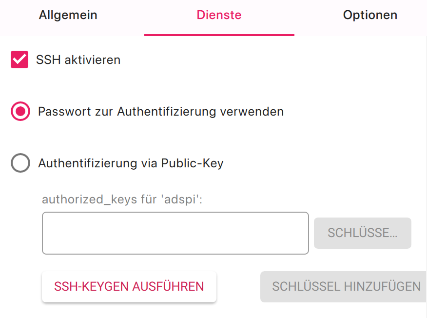
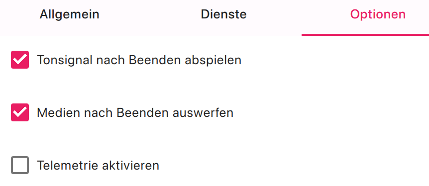
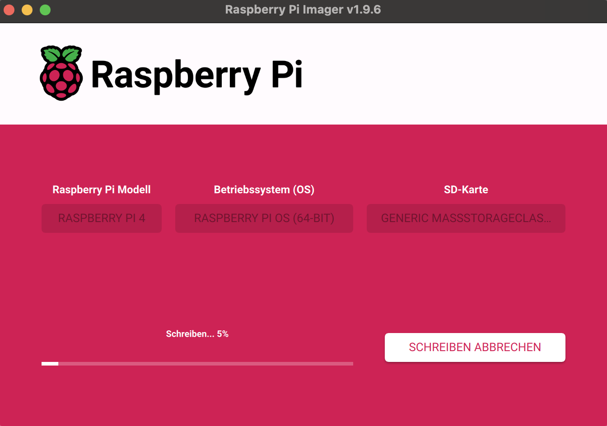

Anleitung.
Inhaltsverzeichnis
1. Raspberry Pi Setup
Als erstes installieren wir das OS auf der SD-Karte und stellen eine SSH Verbindung her:
- Raspberry Pi Imager herunterladen und installieren
- SD Karte an das MacBook anschliessen
- Im Raspberry Pi Imager das Modell, OS und die SD Karte auswählen
- Im nächsten Schritt die Einstellungen anpassen, siehe Bilder
- OS auf die SD Karte schreiben lassen. Danach die SD Karte ans Raspberry Pi anschliessen
- Über USB-C ein Netzteil anschliessen (5V, min. 3A)
- Das Raspberry Pi bootet automaisch. Die rote LED sollte leuchten und die grüne blinken
- Per SSH mit dem Raspberry Pi verbinden. Dazu den zu zuvor definierten Hostnamen verwenden.






#SSH Verbindung (Name und Hostname anpassen)
ssh [BENUTZERNAME@Hostname]
#z.B. ssh adspi@adspi.local